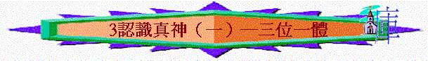

教師版
經文：申 6：4 、 賽 55：8-9
引言：
聖經告訴我們只有一位 神，但我們稱主耶穌為 神，而又稱天父為 神，那麼究竟有幾多位神呢？首先我們要認識我們是人，我們是有限的，我們受著我們的學識及所接觸的事物所左右我們對事物的接納和理解。
例：一個一生從未見過相機的土人，在別人為他影相後，看到自己的照片會誤以為他的靈魂被人吸入了那相片中，這是土人們對照相的無知而產生的誤會。
我們若從聖經中仔細的研究，我們會發淚 神是三位一體的， 神是存在三個位格中，意思即是說 神將自己顯在三個身位中。我們要留心我們不能完全明白 神的奧秘，是因我們是有限的人，當然無法完全了解，那我們是否因不能全知就不理會呢？我們應從聖經中找出答案，並且這是分辨基督教當中的異端的重要教義，從人對三位一體的持守，可知其信仰純正否。
A)三位一體的定義
三位一體（TRINITY）這個英文名詞是來自拉丁文的（TRINITAS）是從形容詞 TRINUS 變化而 來，意思是「三重」（THREEFOLD）或「三合一」（THREE IN ONE）。這個名詞表淚出 神三重的顯淚。「三位一體是由三個合一的位格所合成；這些位格不是分離的存在，而是完全的合 一，作為一位神。按神的本性而言，三位一體是三個獨立的存在──父、子、聖靈。」簡單說 即聖父是神，聖子也是神，聖靈亦是神，彼此同尊同榮同質，但是合而為一；只是一位神。例：「太初有道，道與 神同在，道就是 神。」 約 1：1
道在此是指主耶穌基督。
例：「......叫你欺哄聖靈.....你不是欺哄人，乃是欺哄 神了。」 徒 5：3-4
神是一位合一的 神，有三個位格（即有獨自的自覺及自決的能力），故有人下一個定義－－ 只有一位 神，但合一的 神是三位永恆、同等位格、同質的。很多人以為聖父、聖子和聖靈
加起來應是三個神（１＋１＋１＝３），但這只是人對 神的認識有限，其實應是（１×１×１＝１）；或應如此說：「 神是偉大的，不是『1』，應是『㏄』，即無限大，『㏄＋㏄＋㏄＝㏄』，故 神仍是只有一個。」
B)三位一體的根據
1)舊約中的暗示
a)「 神說：『我們要照著我們的形像，按著我們的樣式造人，使他們管理海裏的魚，空中的鳥，地上的牲畜，和全地，並地上所爬的一切昆蟲。』 神就照著自己的形 像造人，乃是照著祂的形像造男造女。」 創 1：26-27
b)「當時耶和華將硫磺與火，從天上耶和華那裏，降與所多瑪和蛾摩拉，」創 19：24
c)「以色列阿！你要聽，耶和華我們 神是獨一的主。」 申 6：4
「獨一」原文是含有合一的意思，故不單強調 神是獨一，更強調 神的合一性。
d)「我又聽見主的聲音，說：『我可以差遣誰呢？誰肯為我們去呢？』我說：『我在這 裏，請差遣我』」 賽 6： 在同一句話中， 神稱「我」及「我們」，這暗示 神是三位一體的。
2)新約中的展示
a)「所以你們要去，使萬民作我的門徒，奉父、子、聖靈的名給他們施洗，」太 28：19
當中的「名」是單數，若神為多位則應為眾數，這清晰顯示 神是三位一體：父、子、聖靈。
b)「願主耶穌基督的恩惠， 神的慈愛，聖靈的感動，常與你們眾人同在。」
林後 13：14
從祝福的根據中，看到是奉子、父、聖靈的名，父不是最先，可見三位一體內是沒有等級的。
此外，我們從 神的自稱中可見到 神是三位一體的及聖經的用字中亦見到 神是三位一體的。
c)三位一體的比喻
(1)蛋有三部份：有蛋殼、蛋白、蛋黃。
(2)光的本質：有可以看見的光線，看不見但可以感覺到的熱線（如紅外光及微波），以及看得見和看不見的化學光（如紫外光及Ｘ光）。
(3)火：一團火中有很多的火，有不同部份但卻是同質。
(4)三樂葉子：一片葉子分成三個顯然部份。
(5)立體：立體有長、寬、高來構成立體。
(6)等邊三角形：都有相同長度的三條邊。
(7)如人有靈、魂、體（參 帖前 5：23），並且人遭受另一個三位一體的攻擊──外在 世界、內在的肉體與陰間的魔鬼。人的罪惡也形成三位一體：肉體的情慾、眼目的 慾及今生的驕傲。
靈──今生的驕傲──魔鬼──靠聖子勝過魔鬼
魂──眼目的情慾──世界──靠聖父勝過世界
體──肉體的情慾──肉體──靠聖靈勝過肉體
我們要知這些比喻；是使我們可以在我們日常生活所遇見的事物來明白三位一體的存在。但它們都不能完全的解釋三位一體，只是給與我們在觀念上較為易了解及明白。
「如果你愛主耶穌基督，並把祂當作 神來順服、相信而且敬拜祂；如果你處處小心不犯那些使聖靈『擔憂』的罪，如果祂對你的關切、照應與忍耐，能在你裏面產生感恩的心與勇氣的鼓舞；如果你同時相信聖靈與聖子，以及永生的父是一體的，雖然你無法領會三一神論的教條，你的生活卻已經深植在三位一體的真理，所要教導你的事實上了。」 Dr.R.W.DALE（戴耳)
「如果你缺少謙卑的態度，並且使三位一體的 神憂愁，縱使你對三位一體的道理能 窮其奧理，而且口若懸河的加以講解，對你究有何益？」
Thomas A. Kempies（金碧士）
C)三位一體的同工
在一切的事上，三位一體的 神為同工，只不過我們看見其中一位特別的突出而有所誤會。實際上在創造、救贖、救恩、相交、祈禱、重生等事上，三位一體的 神都是同工的。1)在創造事工上：
a)聖父──「起初 神創造天地」 創 1：1
b)聖子──「這道太初與 神同在，萬物是藉著祂造的。」 約 1：2-3
c)聖靈──「 神的靈運行在水面上。」 創 1：2下
2)在道成肉身上
：a)聖父──「......賜下獨生子......」 （參 約 3：16）
b)聖子──「......乃是降世為人的基督耶穌。」 提前 2：5
c)聖靈──「......聖靈要降縷在妳身上，至高者的能力要蔭庇妳，因此妳所要生的聖，必稱為 神的兒子。」 路 1：35
3)在救恩工作上
：a)聖父──如浪子比喻中的父親等候兒子的回來。 （參 路 15：22）
b)聖子──如牧人尋找迷羊。 （參 路 15：4）
c)聖靈──「......就受了所應許爾t靈為印記，這聖靈是我們得基業的憑據，......」 弗 1：13-14
4)在祈禱的事上
：a)聖父──接受我們的禱告 （約 16：23下）。
b)聖子──需奉主的名禱告 （約 16：23下）。
c)聖靈──為聖靈引導我們禱告 （羅 8：26）。
5)在重生的事上：
a)聖父──將我們的名錄在天上（路 10：20）。
b)聖子──以其寶血洗淨我們的罪（弗 1：7）。
c)聖靈──執行改變我們生命的工作（約 3：3-6）。
D)三位一體神的屬性
|
屬 性 |
聖 父 |
聖 子 |
聖 靈 |
|
永 遠 |
詩 90:2 |
啟 1:8、17 |
來 9:14 |
|
無所不能 |
彼前 1:5 |
林後 12:9 |
羅 15:18 |
|
無所不知 |
耶 17:10 |
啟 2:23 |
林前 2:11 |
|
無所不在 |
耶 23:24 |
太 18:20 |
詩 139:7-12 |
|
聖 潔 |
啟 15:4 |
徒 3:14 |
路 1:15 |
|
真 實 |
約 7:28 |
啟 3:7 |
約壹 5:6-7 |
|
恩 慈 |
羅 2:4 |
弗 5:25 |
尼 9:20 |
|
相 交 |
約壹 1:3 |
約壹 1:3 |
腓 2:1-2 |
學生版
經文： 申 6：4 、 賽 55：8-9
A）三位一體的定義
簡單說即聖父是 神、聖子也是 神、聖靈亦是 神，彼此同尊、同榮、同質，但是合而為一；只是一位 神。
例：「太初有道，道與 神同在，道就是 神。」 約 1：1
「道」在此是指主耶穌基督。
例：「......叫你欺哄聖靈.....你不是欺哄人，乃是欺哄 神了。」 徒 5：3-4
神是一位合一的 神，有三個位格(即有獨自的自覺及自決的能力)，故有人下一個定義──只有一位 神，但合一的 神是三位永恆、同等位格、同質的。
很多人以為聖父、聖子和聖靈加起應是三個神（１＋１＋１＝３），但這只是因人對 神的認識有限，其實應是（１×１×１＝１），或應如此說：「 神是偉大的，不是『１』，應是『㏄』即無限大，『㏄＋㏄＋㏄＝㏄』，故 神仍是只有一個。」
B）三位一體的根據
１）舊約中的暗示
ａ）「 神說：『我們要照著我們的形像，按著我們的樣式造人，使他們管理海裏的魚空中的鳥，地上的牲畜，和全地，並地上所爬的一切昆蟲。』 神就照著自己的形像造人，乃是照著祂的形像造男造女。」 創 1：26-27
ｂ）「當時耶和華將硫磺與火，從天上耶和華那裏，降與所多瑪和蛾摩拉，」 創 19：24
ｃ）「以色列阿！你要聽，耶和華我們 神是獨一的主。」 申 6：4
「獨一」希伯來原文含有合一的意思，故不單強調 神是獨一，更強調 神的合一性。
ｄ）「我又聽見主的聲音，說：『我可以差遣誰呢？誰肯為我們去呢？』我說：『我在這裏，請差遣我』」 賽 6：8
在同一句話中， 神稱「我」及「我們」，這暗示 神是三位一體的。
2）新約中的展示
ａ）「所以你們要去，使萬民作我的門徒，奉父子聖靈的名給他們施洗，」 太 28：19
當中的「名」是單數，若 神為多位應為眾數，這清晰顯示 神是三位一體：父、子、聖靈。
ｂ）「願主耶穌基督的恩惠， 神的慈愛，聖靈的感動，常與你們眾人同在。」
林後 13：14
從祝福的根據中，看到是奉子、父、聖靈的名，父不是最先，可見三位一體內是沒有等級的。
C）三位一體的比喻
１）蛋有三部份：有蛋殼、蛋白、蛋黃。
２）光的本質：有可以看見的光線，看不見但可以感覺到的熱線（如紅外線及微波），以及看得見和看不見的化學光(如紫外線及Ｘ光)。
３）火：一團火中有很多的火，有不同部份但卻是同質。
４）三樂葉子：一片葉子分成三個顯然部份。
５）立體：立體有長、寬、高來構成立體。
６）等邊三角形：都有三條相同長度的邊。
７）如人有靈、魂、體(參 帖前 5：23)。
「如果你愛主耶穌基督，並把祂當作 神來順服、相信而且敬拜祂；如果你處處小心不犯那些使聖靈『擔憂』的罪，如果祂對你的關切、照應與忍耐，能在你裏面產生感恩 的心與勇氣的鼓舞；如果你同時相信聖靈與聖子，以及永生的父是一體的，雖然你無法領會三一神論的教條，你的生活卻已經深植在三位一體的真理，所要教導你的事實
上了。 Dr. R. W. DALE（戴耳）
「如果你缺少謙卑的態度，並且使三位一體的 神憂愁，縱使你對三位一體的道理能窮其奧秘，而且口若懸河的加以講解，對你究有何益？」
Thomas A. Kempies（金碧士）
Ｃ）三位一體的同工
在一切的事上，三位一體的 神為同工，只不過我們看見其中一位特別的突出而有所誤會。實際上，在創造、救贖、救恩、相交、祈禱、重生等事上，三位一體的 神都是同工的。
Ｄ）三位一體神的屬性
|
屬 性 |
聖 父 |
聖 子 |
聖 靈 |
|
永 遠 |
詩 90：２ |
啟 1：8、17 |
來 9：14 |
|
無所不能 |
彼前 1：5 |
林後 12：9 |
羅 15：18 |
|
無所不知 |
耶 17：10 |
啟 2：23 |
林前 2：11 |
|
無所不在 |
耶 23：24 |
太 18：20 |
詩 139：7-12 |
|
聖 潔 |
啟 15：4 |
徒 3：14 |
路 1：15 |
|
真 實 |
約 7：28 |
啟 3：7 |
約壹 5：6- 7 |
|
恩 慈 |
羅 2：4 |
弗 5：25 |
尼 9：20 |
|
相 交 |
約壹 1：3 |
約壹 1：3 |
腓 2：1-2 |